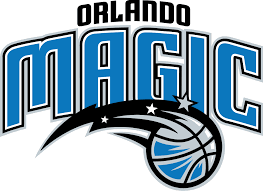

Orlando Magic (en español: La Magia de Orlando) es una franquicia de la NBA con sede en Orlando, Florida. Comenzó a disputar la liga tras la expansión de la misma de 1989.
El no acceder a playoffs tuvo su parte positiva, ya que a pesar de obtener el mejor balance para un equipo que no alcanzó la postemporada (y con ello la menor parte de obtener el número 1 del Draft), los Magic consiguieron por segundo año consecutivo la opción de seleccionar en el puesto más alto del Draft de la NBA. Escogieron a Chris Webber de Michigan, siendo inmediatamente traspasado a Golden State Warriors por Anfernee "Penny" Hardaway y tres futuras primeras rondas. Antes de la ceremonia del draft, Guokas fue despedido y se fichó como entrenador a Brian Hill, siendo además Pat Williams sustituido por John Gabriel en el puesto de mánager general. Con la combinación letal de Shaq y Hardaway, los Magic se convirtieron en un equipo dominante, logrando 50 victorias por primera vez en su historia y clasificándose a playoffs en el cuarto puesto del Este. Sin embargo, los Pacers barrieron a los Magic en primera ronda, dando por finalizada la campaña para los de Florida.
En la temporada 2002-03, el traspaso que enviaba a Mike Miller y Ryan Humphrey a Memphis Grizzlies por Gordan Giricek y Drew Gooden fue positivo para que el equipo lograra un récord de 42-40 y accediera a playoffs. A pesar de seguir sin poder contar con Hill, esta era la tercera aparición consecutiva de Orlando en la postemporada. Tras ir ganando 3-1 en la eliminatoria de primera ronda ante Detroit Pistons, tres partidos consecutivos perdidos les dejaron, de manera increíble, fuera de playoffs. Cuando necesitaban un partido para ganar la serie, McGrady dijo: "es agradable llegar por fin a la segunda ronda". El destino le jugó una mala pasada.
 Indice
Indice